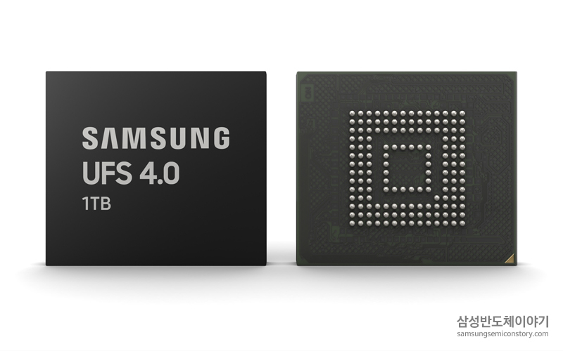

| 삼성전자, 업계 최초 고용량 512GB CXL D램 개발 삼성전자가 이번에 고용량 CXL D램을 개발함에 따라 메인 D램과 더불어 서버 한 대당 메모리 용량을 수십 테라바이트 이상으로 확장할 수 있게 됐습니다. | |
|---|---|
|  | 삼성전자, 업계 최초 UFS 4.0 메모리 개발 UFS 4.0은 고해상도 컨텐츠와 대용량 모바일 게임 등 처리할 데이터가 늘어나는 최신 스마트폰 등 모바일 기기를 비롯해 향후 차량용(Automotive) 반도체, 메타버스(Metaverse) 등을 포함한 기기들에 광범위하게 확산될 것으로 예상됩니다. |
| 삼성전자, ‘생체인증카드’용 원칩 지문인증IC 출시 하드웨어 보안칩, 지문 센서, 보안 프로세서 기능을 하나의 IC로 통합, 국제 보안 인증 획득 및 테스트 통과로 보안성 입증 |